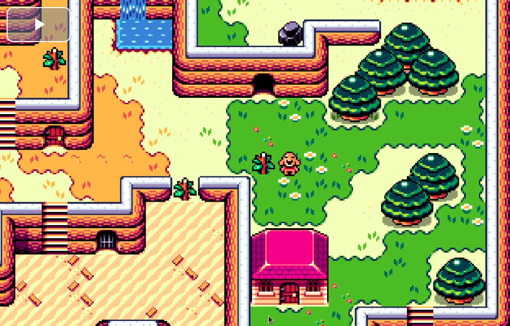
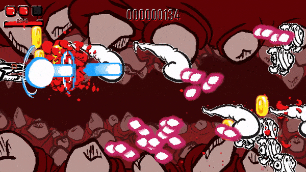
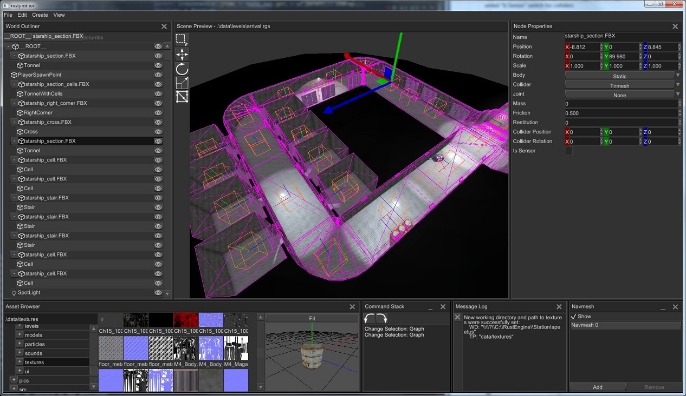
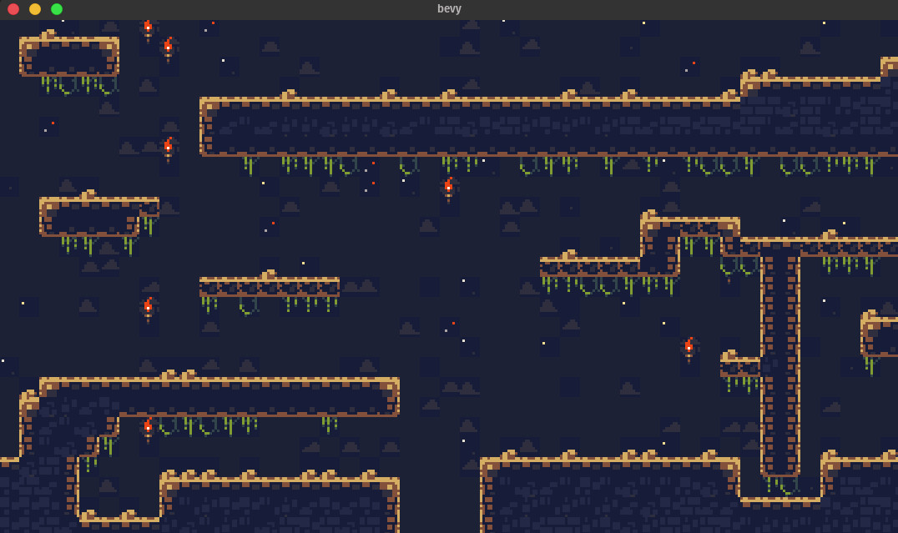
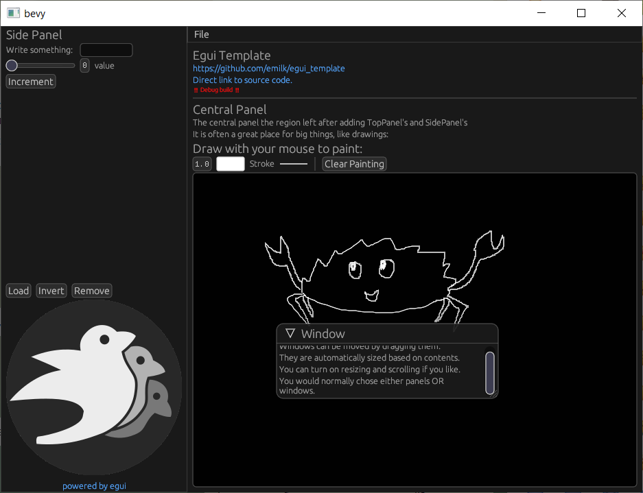

This Month in Rust GameDev #18 - January 2021
Welcome to the 18th issue of the Rust GameDev Workgroup's monthly newsletter. Rust is a systems language pursuing the trifecta: safety, concurrency, and speed. These goals are well-aligned with game development. We hope to build an inviting ecosystem for anyone wishing to use Rust in their development process! Want to get involved? Join the Rust GameDev working group!
You can follow the newsletter creation process by watching the coordination issues. Want something mentioned in the next newsletter? Send us a pull request. Feel free to send PRs about your own projects!
Table of contents:
- Rust GameDev Podcast
- Rust GameDev Meetup
- Game Updates
- Learning Material Updates
- Engine Updates
- Library & Tooling Updates
- Popular Workgroup Issues in Github
- Requests for Contribution
Rust GameDev Podcast #5

The 5th podcast episode is an interview with Alex Ene creator of an upcoming dwarven simulation game, Dwarf World.
In this week's episode, Richard and Forest chat to Alex Ene, creator of the dwarven simulation game, Dwarf World. We cover writing custom engines, unit testing, build systems, and picking the right frameworks for your game.
Listen and subscribe from the following platforms: Rust GameDev Podcast (simplecast), Apple Podcasts, Spotify, RSS Feed, Google Podcasts.
Rust GameDev Meetup

The first iteration of the Rust Gamedev Meetup happened in January. It was an opportunity for developers to show of what Rust projects they've been working on in the game ecosystem. Developers showed off physics engines, custom build tools, renderers, and more. You can watch the recording of the meetup here on Youtube.
The next meetup will take place 13th of February at 16:00 GMT on the Rust Gamedev Discord server, and can also be streamed on Twitch.
Game Updates
Teki (敵)
Teki is a free and open-source fangame of the Tōhō series using SDL2 and Legion for ECS. Thanks to WebAssembly - via wasm-pack -, teki can be played online.
It is aimed to be a shoot ’em up game with "lots of bullets" a.k.a danmaku 弾幕 - literally "barrage" or "bullet curtain" in japanese.
The project is still at a “very” early stage of development (Dec. 2020).
Fishgame
Fish game gameplay footage.
Fishgame is an online multiplayer game, created in a collaboration between Nakama, an open-source scalable game server, and the Macroquad game engine.
The game is going to showcase nakama multiplayer capabilities for the rust language world.
This month the game got a public, multiplayer HTML5 build. Play it online!
Station Iapetus
Check gameplay video on YouTube
Station Iapetus by @mrDIMAS is a 3rd person shooter on the space prison Iapetus near the Saturn.
The game is based on the rg3d game engine and is meant to be the proof that rg3d is ready for commercial production. The game is a commercial project which will be released in Steam.
SeniorSKY
Over the mountains in Slovakia
SeniorSKY is a flight simulator which uses Vulkan API, developed by @pmathia0. As an aerospace engineering student, Peter has always been interested how a flight simulator works under the hood. The development of SeniorSKY started as a hobby project during university studies.
SeniorSKY uses real-world elevation data with 1 arc second precision and can render the whole globe in real dimensions. During the flight, the terrain tiles are loaded dynamically based on real GPS coordinates of airplane, with a decreasing level of detail further from the camera. This is achieved using a combination of a terrain-quad-tree and GPU tessellation.
SeniorSKY also implements basic rendering of sky, atmosphere and fog.
To be able to simulate a flight, the application temporarily integrates 3rd party flight dynamics engine called JSBSim. Meanwhile, development of own, custom flight dynamics is already in progress.
Oicana
Solving puzzles to build towers
Oicana is a tower defense game with puzzle aspects submitted to Mini jam 71 on itch by M1nd0fRafa3l and @nikl_me. The game was written using the Rust game engine Bevy.
Colorless puzzle pieces try to reach your base. Your towers have to shoot at the pieces to uncover their color. After defeating a piece, it will try to run away and you should catch it to upgrade your towers or build new ones.
Following the game jam the tower upgrades where improved and game audio was changed to use Kira via an experimental bevy plugin.
Bounty Bros.
 First pass character controller video
Bounty Bros. is a prototype dungeon crawler game in the spirit of "Legend of Zelda: Link to the Past". The game is being developed by Katharos Technology as a playground for a future commercial game, along with a custom 2D engine built on top of Bevy.
The engine, which is unnamed so far, will be Open Sourced soon and will be designed to make it very easy to make games with a similar gameplay and style, primarily by simply writing YAML configuration files and integrating with LDtk.
Flesh
 Inside flesh
Flesh by @im_oab is a 2D-horizontal shmup game with hand-drawn animation and implement using tetra. It still in the development stage but have a release date set in October 2021.
This game takes place inside the flesh of mysterious organisms that players will fight through multiple levels to get out.
A/B Street
A/B Street by @dabreegster is a traffic simulation game exploring how small changes to roads affect cyclists, transit users, pedestrians, and drivers, with suppot for any city with OpenStreetMap coverage.
In January, Bruce implemented variable traffic signal timing, dedicated cycle-paths and pedestrian plazas were imported, Michael and Yuwen overhauled the UI buttons, and we finished day/night toggling. Loading on the web and starting scenarios is also much faster!
Paddlers
Paddlers (GitHub, Online Demo) by @jakmeier is an MMORTS for the browser, developed as an experimental hobby project.
This month, version 0.2.0 has been released, which removes all dependencies to Stdweb and Quicksilver while keeping the game itself virtually unchanged. In the process, a part of the code of Paddlers moved to Paddle, a new framework for 2D browser games running on desktop and mobile phones. More details on that are available here.
Many new features for Paddle and Paddlers are already in the pipeline, so stay tuned for more exciting updates in the next monthly newsletter!
Antorum
Hanging out by the vault
Antorum is a micro-multiplayer online role-playing game by @dooskington. The game server is written in Rust, and the official client is being developed in Unity.
Banking was implemented this month! Players can now store their items and wealth in a safe place. Additionally, the concept of "item combinations" was implemented, bringing more interesting crafting scenarios into the game.
Harvest Hero
Harvest Hero (Discord) by @bombfuse_dev is an arcade/roguelike game built on top of Emerald. This month's updates include:
- Art update thanks to @ddooby.
- Map templates for better designed maps.
- A shop system for buying abilities/enchantments.
- SFX were added to bring some more life to the game.
Dwarf World
Dwarf World (Discord) by Alex Ene has added a couple of updates and improvements:
- Dynamic lights and light propagation so deeper caves are darker.
- An in-game feedback button that people can use to report bugs or just give general feedback.
- All random numbers are from seeded generators so it makes bugs easier to reproduce.
- A big chunk of a replay system is finished. This should help a lot with reproducing issues. Plus, it's really fun to watch.
- Bug fixes and performance improvements, mostly related to rendering and culling systems.
If you're interested in keeping a closer eye on the project and monitor it's progress, you can join the game's discord channel. That's where the pre-alpha builds will drop there once they are ready to be seen by a wider audience.
Stellary 2
Stellary 2 by @CoffeJunkStudio is a 3D real-time artillery game in which the player has to destroy all enemy planets in order to defend his own from extinction.
Based on the SimJam 2020 game "Stellary", the studio is now working on this sequel with their self-developed "Sphere Engine". It will feature an underlying physically based gravity simulation, powering the space battles in different solar systems. You can find regular updates on Twitter.
By the way: "Stellary 2" is just a working title, feel free to drop them a PM on Twitter if you have a flash of inspiration!
Theta Wave
Homing missiles pursue the closest player entity
A real name was finally chosen for space_shooter_rs! Theta Wave is a space shooter game by developers @micah_tigley and @carlosupina. It is one of the showcase games for the Amethyst Engine. In the past month, they have been focused on improving the motion system for the game. The improvements allowed them to begin adding more interesting behavior for moving entities. Missiles were changed to home to the player.
Way of Rhea
Way of Rhea is a picturesque puzzle game that lets you correct your mistakes. Change your color, teleport past the colored gates, master the color powered circuits, and befriend the color changing crabs-but don't let them out!
This month's major updates include:
- Autosave support.
- Steam cloud support.
- A free demo was released as part of Boston FIG (no longer available).
- In game audio options.
- A new level featuring a new puzzle mechanic.
- An updated trailer.
Veloren
Let it snow!
Veloren is an open world, open-source voxel RPG inspired by Dwarf Fortress and Cube World.
In January, lots of work was done on new models that make the world feel more alive. Work was done on economic simulation, and many of the blog posts highlight this progress. This includes trading between sites, and professions. Skill trees were completed, and are now in the game.
Large changes are being implemented to the CI system to reduce build times. Work has been ongoing on improving the Veloren wiki, with many contributors adding to it. In February, a meeting will be held to discuss the 0.9 release, with does not yet have a release date.
January's full weekly devlogs: "This Week In Veloren...": #101, #102, #103, #104.
Shotcaller
An art mockup of some Shotcaller action.
Shotcaller (Discord) is a minimalistic MOBA that focuses strictly on macro-play with few actions-per-minute, leaving only room for grand strategy decisions. The game is made with bracket-lib, a custom game engine and Plank ECS.
Recent updates include:
- Version v0.4.0 was released.
- First batch of custom art assets completed; will be implemented in the month to come.
- New leaders: Alchemist, Axe, Rubick, Centaur, Bristleback, Shadow Fiend.
- Gold system.
- Headless option (in preparation for AI/ML experimenting).
- Fog of War.
- Mouse support.
Zemeroth
Click to watch a footage with sound üîä
Zemeroth by @ozkriff is a minimalistic 2D turn-based tactical game. Some of the recent updates:
- The game was migrated from good-web-game to macroquad and converted to explicit async assets loading.
- Proper sound effects & music were added using the quad-snd library (more details).
The final preparations for v0.7 are wrapping up!
Learning Material Updates
Hands-on Rust

"Hands-on Rust: Effective Learning through 2D Game Development and Play" is a book by Herbert Wolverson (the author of bracket-lib and the Rust Roguelike Tutorial): make fun games as you learn Rust through a series of hands-on gamedev tutorials and real-world use of core language skills.
Recent beta releases added the following chapters:
- #10: Fields of View;
- #11: More Interesting Dungeons;
- #12: Map Themes;
- #13: Inventory and Power Ups;
- #14: Deeper Dungeons;
- #15: Combat Systems and Loot;
- #16: Final Steps and Finishing Touches.
Triangle from Scratch
Triangle from Scratch (source code) is a WIP tutorial series by @Lokathor about drawing a triangle without using any outside crates. Two extensive chapters were added this month:
Setting a Rust Executable's Icon in Windows
Way of Rhea's icon in the taskbar
Anthropic Studios has shared an article about
manually using rc.exe and embedding the resulting .res into your app
to set your game's system icon on Windows.
Discussions: /r/rust_gamedev
Exploring WebSocket with Rust and Tide
An exploration post on how to use WebSockets with Tide framework by creating
a simple tic-tac-toc game. It's focused on how to implement ws to enable all
time of real time apps (and games) with Rust and Tide.
You can also play tic-tac-tide online.
Engine Updates
ggez

ggez is a lightweight cross-platform game framework for making 2D games with minimum friction.
The zero'th release candidate for version 0.6.0 has been released and there has been no particularly horrific outcry of people's games exploding. A first release candidate with a pile of medium-sized bug fixes should be coming in early February, hopefully soon followed by a full release. Feedback is welcome!
Special thanks to the contributors who helped hunt bugs and organize PR's to get this version out the door: @PSteinhaus, @Manghi, @AaronM04, @Systemcluster, and @Andy-Python-Programmer!
Tetra
Tetra is a simple 2D game framework, inspired by XNA and Raylib. This month, versions 0.5.7 and 0.5.8 were released, with various changes:
- Basic multisampled anti-aliasing support (with further improvements to come).
- Functions for generating primitive shape meshes.
- A more flexible
Rectangletype. - Lots of bug fixes and docs improvements.
For full details, see the changelog.
Additionally, work on version 0.6 has begun, with a release planned for some time in February!
Dotrix
Dotrix (Discord, Twitter) got an official egui support and a new example demonstrating various engine features and controls. The next big milestone for Dotrix developers is a terrain engine and editor, also made with egui. Some progress you can already find on YouTube.
rg3d
 A level made in rusty-editor which is a native scene editor for the rg3d game engine.
rg3d (Discord, Twitter) is a game engine that aims to be easy to use and provide large set of out-of-box features. Some of the recent updates:
- Animation blending state machines were improved.
- It's now possible to copy nodes in-place.
- The number of draw calls for UI was reduced by 70%.
- Fixed clipping issues and text measurement in the UI.
- Opacity for UI widgets was added.
- Layout of Scroll- and Wrap- panels was fixed.
- Light scatter issues for spot lights were fixed.
- Support for transparent meshes.
- Migration to rapier 0.5.
- Animation signal handling is fixed when animation playing in reverse.
- Animation tracks now are able to filter position/scale/rotation.
- Sprite rendering fixes.
- Improved copy/paste in rusty-editor.
- Lots of other small fixes and improvements.
Library & Tooling Updates
rkyv
rkyv is a zero-copy deserialization framework for Rust. It's similar to FlatBuffers and Cap'n Proto and can be used for data storage and messaging.
Version 0.3 was released this month and brought some highly-requested features:
- A new hashmap implementation using perfect hashing to decrease memory usage and fix portability issues.
- The
Unarchivetrait to enable more traditional data deserialization for archived types. - Improved validation performance.
- Better error messages and API ergonomics.
- A book with more narrative documentation on architecture and internals.
- More tests and realistic benchmarks against other popular serialization frameworks.
The next update will be v0.4 and is on the way soon with a release date around mid-February.
This Month in Mun

Mun is a scripting language for gamedev focused on quick iteration times that is written in Rust.
Revitalized from the holiday break, the Mun core team got cracking; those January updates include:
- a ton of new language server features;
- the ability to emit IR;
- better documentation;
- bug fixes and other improvements.
GameLisp v0.2

GameLisp (source code, playground) by @fleabitdev is a scripting language designed specifically for Rust game development.
This month, version 0.2.0 has been released. Some of the updates:
- Any
'staticRust type, including types defined by external crates, can now be moved onto the garbage-collected heap and manipulated by GameLisp scripts. - Rust data on the garbage-collected heap can now contain pointers to other
garbage-collected data, by implementing a
trace()method. - Version 0.1 could only bind non-capturing Rust closures, but closures
which capture
'staticdata are now fully supported. - Rust function pointers can now be passed directly to GameLisp,
rather than using the
rfn!macro. The clunkylib!andrdata!macros have also been removed. - Updated documentation starting from the "Rust Bindings" chapter.
For full details, see the changelog.
Discussions: /r/rust
LDtk-rs
LDtk-rs is a Rust crate for reading the LDtk map file format. The bindings to the LDtk format are 100% automatically generated from the LDtk JSON Schema, with the option to download the latest JSON Schema at build time for automatic updates.
bevy_ldtk
 Tileset from "Cavernas" by Adam Saltsman
bevy_ldtk is a Bevy plugin for loading LDtk tilemaps.
It features:
- An efficient renderer that only uses 4 vertices per map layer.
- Hot reloading through the Bevy asset server integration.
- Heavily commented code to help others who want to see how to make their own tilemap renderers.
kira
kira by @tesselode is a game audio library tailored to composers and other people who need expressive audio.
v0.4.0 was released with a new wasm32 support, a new handle-based API, improved error handling, and serde support for sequences, arrangements, and most config structs.
Dimforge

Dimforge creates open-source Rust crates for numerical simulation. Some of the January updates:
- Parry was announced, the successor of ncollide for 2D and 3D collision-detection in Rust.
- The new version of Rapier brings many new features, including the ability to use custom shapes, as well as convex polygons/polyhedrons for 2D and 3D respectively.
You can read about all of the changes in the January edition of "This Month In Dimforge".
gfx-rs and wgpu-rs
The community managed to squeeze the v0.7 releases out at the end of the month. See the detailed notes on gfx blog post.
The highlight of the show is about shaders. Most of wgpu-rs shaders are now written in WGSL, and gfx-rs community is inviting Rust game/graphics developers to evaluate if naga could fulfill their shader translation needs in the future.
imgui-rs
 Drag and Drop and the new Drawing Api at Work in 0.7.0
Drag and Drop and the new Drawing Api at Work in 0.7.0
imgui-rs is the Rust bindings for the ubiquitous immediate mode GUI library,
Dear ImGui.
Under new maintenance, version 0.7 has been released, which features a new
API for raw draw calls, support for ergonomic Drag and Drop, and tons of improvements.
Notably, many functions were made inline and/or const, including the im_str!
macro.
egui
Some of the supported widgets in the new grid layout.
egui is a simple, fast, and highly portable immediate mode GUI library.
This month version 0.8 of egui was released with a new grid layout, new look, and many smaller fixes and improvements. You can try out egui in the online demo.
bevy_egui

bevy_egui provides a Egui integration for the Bevy game engine. It supports bevy_webgl2 and implements the full set of Egui features (such as clipboard and opening URLs).
Try out the online demo.
chess-engine
Console and web clients for the chess-engine
chess-engine by @adam-mcdaniel is a pure Rust, no-std, dependency-free chess engine built to run anywhere.
I love chess a lot. It's definitely one of my favorite games ever. However, I've always been disappointed when trying to write programs that play chess digitally (particularly in a compiled language). Although several amazing engines exist, it's near impossible to find a neat library for chess-related-programming that runs on everything.
chess-engine is a solution to my problem. If you want a chess engine that runs on embedded devices, the terminal, the desktop (with a gui), and the web, this is probably your best bet.
Discussions: /r/rust
dcli
Example of dcliah output
dcli by Mike Chambers is a library and a collection of utilities&apps that provide a command line interface (CLI) for viewing player stats and data from Destiny 2, using the Destiny 2 API:
- dclis - retrieves primary platform and membership ids for Destiny 2 players.
- dclim - manages and syncs the remote Destiny 2 API manifest database.
- dclias - downloads and syncs Destiny 2 Crucible activity history into a local sqlite3 database file.
- dclic - retrieves character ids for the specified member.
- dclims - searches the Destiny 2 manifest by hash ids (from API calls).
- dclitime - generates date / time stamps for Destiny 2 weekly event moments.
- dclia - displays information on player's current activity within Destiny 2.
- dcliah - displays Destiny 2 activity history and stats.
- dcliad - displays Destiny 2 Crucible activity / match details.
Rust Support in Shader Playground
Shader Playground (source code) by @tgjones now allows you to try out writing shaders in Rust (using rust-gpu) without downloading or building anything.
Popular Workgroup Issues in Github
Requests for Contribution
- Embark's open issues (embark.rs).
- gfx-rs's "contributor-friendly" issues.
- wgpu's "help wanted" issues.
- luminance's "low hanging fruit" issues.
- ggez's "good first issue" issues.
- Veloren's "beginner" issues.
- Amethyst's "good first issue" issues.
- A/B Street's "good first issue" issues.
- Mun's "good first issue" issues.
- SIMple Mechanic's good first issues.
- Bevy's "good first issue" issues.
That's all news for today, thanks for reading!
Want something mentioned in the next newsletter? Send us a pull request.
Also, subscribe to @rust_gamedev on Twitter or /r/rust_gamedev subreddit if you want to receive fresh news!